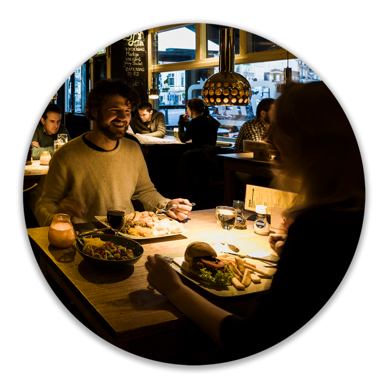
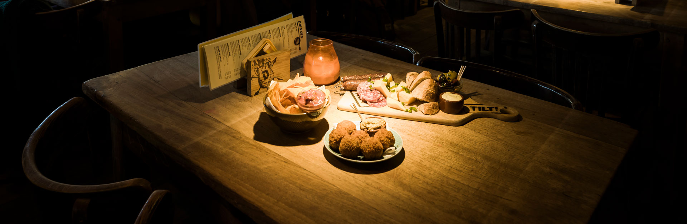
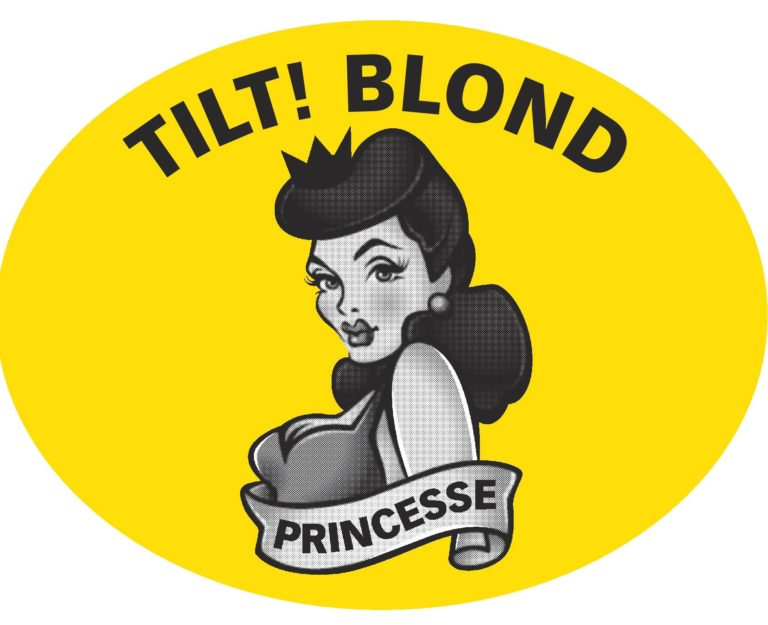
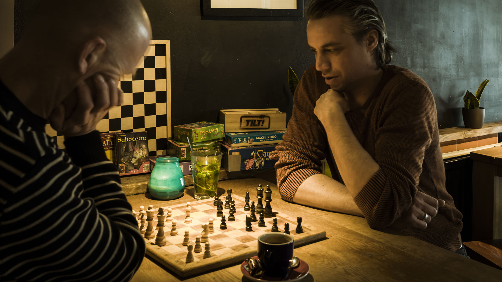
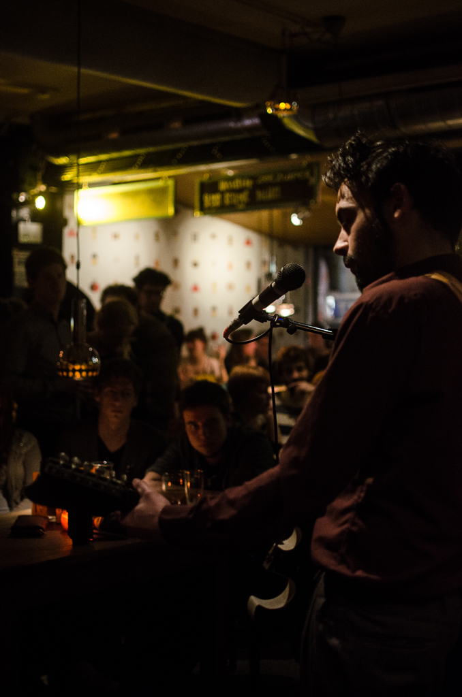

Eetcafé in de Lange Jufferstraat, Utrecht
Je dagelijkse dosis gezelligheid.
Ontbijt, lunch, borrel en diner. Ons eigen bier van de tap, een kast vol spellen en geregeld jazz of een dj.
Nieuw: vraag naar het shared dining arrangement voor dinergroepen. Meer over groepen
Eten bij Tilt!
Ontbijt, lunch of diner, winter of zomer: wij koken zoals wij zijn. Raak, met smaak en zonder poeha.
Op het krijtbord
Dagsoep voor € 8,00 en de Tilt! specials: dagverse gerechten naast de vaste kaart, tegen dagprijs. Kijk op de krijtborden of vraag het de bediening.

Ontbijt & lunch 12:00 - 17:00
Snacks & taart 12:00 - 22:00
Diner 17:00 - 21:00
Te bestellen van 12:00 - 17:00 uur
- Tosti Tilt!€ 7,60
met tomatenmayonaise
- Tosti Tilt! met spiegelei€ 8,60
met tomatenmayonaise
- Broodje Tilt!€ 11,00
met gerookte kip, kaas, sla, komkommer, spiegelei en tomatenjam
- Broodje makreelsalade€ 11,40
met gerookte makreel, olijven, kappertjes en rode ui
- Broodje carpaccio€ 14,00
met rucola, truffelmayonaise, rode ui en grana padano
- Broodje geitenkaas€ 11,40
met appel, honing en walnoot
- Kalfsvleeskroketten€ 11,40
met grove mosterd en brood
- Oesterzwamkroketten Fungi Factory€ 11,40
met grove mosterd of truffelmayonaise en brood
- Uitsmijter€ vanaf 10,00
3 eieren naturel of met ham of spek en/of kaas
- Dagsoep€ 8,00
zie krijtborden of vraag de bediening
- Kikkererwtenburger€ 19,00
met pittige mangochutney, sla, tomatenmayonaise, rode koolsalade en frites
- Burger Tilt!€ 20,60
Black Angus (200 gr) met bacon, jalapeños, sla, kaas, augurk, tomaat, smokey bbq-saus, rode koolsalade en frites
- Caesar salade€ 15,00
met sla, gerookte kip of halloumi, cherrytomaat, ei, komkommer, grana padano, croutons en caesardressing
Te bestellen van 12:00 - 22:00 uur
Koud
- Breekbrood€ 8,40
met verschillende dips, ook als klein portie
- Kaasblokjes€ 8,00
met tafelzuur en grove mosterd
- Borrelplank Tilt! vegetarisch€ 18,00
met kaasblokjes, loempia's, samosa's, huisgemarineerde olijven, geitenkaas, tafelzuur, pindamix en brood met verschillende dips
- Borrelplank Tilt!€ 18,00
met chorizo, carpaccio, makreelsalade, kaasblokjes, tafelzuur, huisgemarineerde olijven, pindamix en brood met verschillende dips
- Doritos€ 6,00
met huisgemaakte salsa
- Huisgemarineerde olijven€ 6,00
- Pindamix€ 4,00
- Pringles€ 4,00
in diverse smaken
Warm
- Nacho's€ 10,00
met cheddar, guacamole, salsa en kruidencrème fraîche
- Loaded nacho's€ 13,00
met pulled pork of jackfruit, cheddar, guacamole, salsa en kruidencrème fraîche
- Loaded fries€ 12,00
frites met rendang of jackfruit en kaas
- Dagsoep€ 8,00
zie krijtborden of vraag de bediening
- Bitterballen€ 8,60
6 stuks
- Oesterzwambitterballen€ 9,00
6 stuks
- Kaastengels€ 8,00
6 stuks
- Loempia's vegan€ 6,40
8 stuks
- Samosa's vegan€ 6,40
6 stuks
- Vlammetjes vegan€ 9,00
6 stuks
- Bittergarnituur, ook vega/vegan€ 9,60
8 stuks
- Torpedogarnalen€ 7,60
6 stuks
Te bestellen van 17:00 - 21:00 uur
Voorgerecht
- Dagsoep€ 8,00
zie krijtborden of vraag de bediening
- Breekbrood€ 8,40
met verschillende dips, ook klein mogelijk
- Carpaccio€ 11,00
met rucola, truffelmayonaise, rode ui, grana padano en pijnboompitten
- Nacho's€ 10,00
met cheddar, guacamole, salsa en kruidencrème fraîche
- Loaded nacho's€ 13,00
met pulled pork of jackfruit, cheddar, guacamole, salsa en kruidencrème fraîche
- Borrelplank Tilt! vegetarisch€ 18,00
met kaasblokjes, loempia's, samosa's, huisgemarineerde olijven, pindamix, tafelzuur, geitenkaas en brood met verschillende dips
- Borrelplank Tilt!€ 18,00
met chorizo, carpaccio, makreelsalade, kaasblokjes, tafelzuur, pindamix, huisgemarineerde olijven en brood met verschillende dips
Hoofdgerecht
- Burger Tilt!€ 20,60
Black Angus (200 gr) met bacon, jalapeños, sla, kaas, augurk, tomaat, smokey bbq-saus, rode koolsalade en frites
- Saté van varkenshaas€ 20,60
met satésaus, cassavekroepoek, huisgemaakte atjar, krokante uitjes, sajoerboontjes en frites
- Verse tagliatelle met champignon-truffelsaus€ 18,00
met pecorino en salade
- Gado gado€ 17,00
met tempeh, sajoerboontjes, huisgemaakte atjar, witte rijst, pindasaus, cassavekroepoek en gekookt ei. Optie satéstokje + € 5,00
- Caesar salade€ 18,80
met sla, gerookte kip of halloumi, cherrytomaat, ei, komkommer, grana padano, croutons en caesardressing, met frites
- Kikkererwtenburger€ 19,00
met pittige mangochutney, sla, tomatenmayonaise, rode koolsalade en frites
- Tilt! specialsdagprijs
dagverse gerechten naast ons vaste menu, zie krijtborden of vraag de bediening
Extra
- Huisgemaakte verse friet€ 4,80
- Groene salade€ 4,00
- Rode koolsalade€ 4,00
Te bestellen van 12:00 - 22:00 uur
Allemaal huisgemaakt
- Appeltaart€ 5,60
met slagroom + € 0,60
- Cheesecake€ 6,00
met witte chocolade en frambozen, met slagroom
- Brownie€ 5,40
fudgy en vegan

Drinken
Tien bieren van de tap, een wisseltap met elke keer iets anders, ruim dertig bieren op fles en een flinke rij zonder alcohol.
- Tilt! Blond, 25 cl€ 5,20
6,2% · ons eigen Princessebier, gebrouwen bij Brothers In Law
- Hertog Jan, 25 cl€ 3,80
5,1%
- Hertog Jan, 50 cl€ 7,60
5,1%
- Jupiler, 25 cl€ 3,60
5,2%
- Jupiler, 50 cl€ 7,20
5,2%
- Leffe Blond, 25 cl€ 5,60
6,6%
- Franziskaner Weizen, 30 cl€ 5,40
5,0%
- Franziskaner Weizen, 50 cl€ 8,20
5,0%
- Tripel Karmeliet, 25 cl€ 5,80
8,4%
- Goose Island IPA, 25 cl€ 5,60
5,9%
- Hoegaarden wit, 25 cl€ 5,60
5,0%
- Hertog Jan Weizener, 30 cl€ 5,80
5,7%
- Pauwel Kwak, 25 cl€ 5,80
8,4%
- Wisseltap
elke keer andere lekkere bieren
Blond
- Victoria Strong Blond, 33 cl€ 5,80
8,5%
- Leffe d'Été, 33 cl€ 5,20
5,2%
- Grisette Blond, glutenvrij, 25 cl€ 5,40
5,5%
- Brugse Zot, 33 cl€ 6,40
6,0%
- Duvel Rood, 33 cl€ 6,80
8,5%
- La Chouffe, 33 cl€ 6,80
8,0%
Pale ale
- Brothers In Law Big Popa NEIPA, 33 cl€ 6,80
6,0%
- Kromme Haring Wahoo APA, 33 cl€ 7,60
6,0%
- Homeland Zeebonk NEIPA, 33 cl€ 7,60
6,4%
- Two Chefs Funky Falcon, 33 cl€ 7,20
5,2%
Tripel
- Hertog Jan Tripel, 33 cl€ 5,00
8,5%
- Leffe Tripel, 33 cl€ 6,20
8,2%
- Westmalle Tripel, 33 cl€ 7,20
9,5%
Wit & weizen
- Brothers In Law Auntie Flaunty, 33 cl€ 6,20
6,0%
- 't IJ IJwit, 33 cl€ 7,00
6,5%
- Texels Skuumkoppe, 30 cl€ 6,00
5,0%
- Eeuwige Jeugd Bullebak, 33 cl€ 7,00
7,7%
Fruitbier
- Hoegaarden Rosée, 25 cl€ 4,40
3,0%
- Leffe Ruby, 33 cl€ 5,60
5,0%
- Liefmans, 25 cl€ 5,20
3,8%
- Kasteel Rouge, 33 cl€ 6,80
8,0%
Overig bier
- Leffe Bruin, 33 cl€ 5,20
6,5%
- Leffe Rituel 9, 33 cl€ 6,00
9,0%
- Hertog Jan Karakter, 30 cl€ 4,00
7,5%
- Corona Extra, 33 cl€ 5,20
4,5%
- Orval, 33 cl€ 7,20
6,2%
- Palm, 25 cl€ 4,00
5,2%
- Bolleke De Koninck, 33 cl€ 5,40
5,2%
- Somersby Apple Cider, 33 cl€ 5,60
4,5%
- Boon Oude Geuze, 25 cl€ 5,80
7,0%
- Saison Dupont, 33 cl€ 5,20
6,5%
- Hertog Jan 0.0, 30 cl€ 3,80
0,0%
- Franziskaner Alkoholfrei, 50 cl€ 5,80
<0,5%
- Karmeliet alcoholarm, 33 cl€ 5,20
<0,4%
- Leffe Blond 0.0, 33 cl€ 4,80
0,0%
- Leffe Bruin 0.0, 33 cl€ 4,80
0,0%
- Hoegaarden Radler, 25 cl€ 3,60
0,0%
- Corona Cero, 33 cl€ 4,80
0,0%
- Brothers In Law Funcle PIPA, 33 cl€ 5,60
0,3%
- Vandestreek Playground IPA, 33 cl€ 6,20
<0,5%
- Kromme Haring Sand Diver, 33 cl€ 6,20
<0,3%
- Torres Natureo 0.0 (wit, Spanje), fles€ 16,00
- Pink Gin & Tonic 0.0€ 6,40
Wit · glas / fles
- Hoja Sana, Spanje€ 5,60 / 28,00
Airén-Sauvignon, biologisch
- Barefoot, VS€ 5,80 / 30,00
Pinot Grigio
- Green Tail Sweet, Spanje€ 5,60 / 28,00
Pinot Grigio
- Marqués de Riscal, Spanje€ 7,00 / 32,00
Verdejo
- Torres Natureo 0.0, Spanje€ 16,00
Muscat, halve fles
Rosé · glas / fles
- Hoja Sana, Spanje€ 5,60 / 28,00
Tempranillo, biologisch
- Monteclain, Frankrijk€ 6,20 / 31,00
Grenache Noir
Rood · glas / fles
- Hoja Sana, Spanje€ 5,60 / 28,00
Tempranillo, biologisch
- Croix d'Or€ 6,00 / 30,00
Pinot Noir
- Campo di Cristobal, Italië€ 6,00 / 30,00
Primitivo
Bubbels
- Piccolo Martini Prosecco DOC€ 10,00
Met koemelk of havermelk
- Koffie, fairtrade & biologisch van Boot€ 3,40
- Espresso€ 3,40
- Dubbele espresso€ 4,60
- Espresso macchiato€ 3,80
- Cappuccino€ 3,80
- Koffie verkeerd€ 3,80
- Latte macchiato€ 4,20
- Flat white€ 4,60
- IJskoffie€ 4,60
- Ierse of likeurkoffie, naar keuze€ 8,60
- Thee, fairtrade & biologisch€ 3,60
- Verse kruidenthee munt/gember€ 4,00
- Chocomel€ 3,40
- Fristi€ 3,40
- Warme chocomel€ 3,60
- Warme chocomel met rum of Baileys€ 8,20
- Pure sappen van Schulp€ v.a. 3,80
appel / peer / tomaat / sinaasappel
- Coca-Cola / Coca-Cola Zero€ 3,40
- Cassis / Orange / Sprite zero sugar€ 3,40
- Bitter Lemon / Tonic / Rivella€ 3,40
- Ginger Ale / Ginger Beer€ 3,40
- IJsthee / IJsthee groen€ 3,40
- Chaudfontaine rood / blauw€ 3,20
- Wilder Land Into The Woods siroop€ 3,60
- Wilder Land Ticket To The Tropics siroop€ 3,60
Cocktails
- Aperol Spritz€ 10,00
- Espresso Martini€ 11,00
- Pornstar Martini€ 11,00
- Gin & Tonic€ 9,00
- Port & Tonic€ 8,40
- Pink Gin & Tonic 0.0€ 6,40
Port, sherry & vermout
- Rode port LBV, Fonseca€ 4,60
- Witte port, Fonseca€ 4,00
- Sherry fino, Tocayo€ 4,00
- Martini Dry€ 4,00
Nederlands gedistilleerd
- Bobby's Schiedam Dry Gin€ 6,60
- Jonge jenever, Zuidam€ 4,00
- Oude jenever, Zuidam€ 4,40
- Korenwijn, Zuidam€ 4,60
- Baliekluiver kruidenbitter, De Zes Vaatjes€ 4,00
Buitenlands gedistilleerd
- Gin, Bombay Sapphire€ 5,20
- Vodka, Absolut€ 4,60
- Witte rum, 3 jaar, Havana Club€ 4,60
- Bruine rum, 7 jaar, Havana Club€ 5,80
- Tequila, Olmeca Reposado€ 6,00
- Jägermeister€ 4,60
- Ricard€ 4,60
Likeur
- Salmari€ 4,20
- Limoncello, Villa Massa€ 4,40
- Sambuca, Molinari€ 4,40
- Baileys€ 4,40
- Amaretto, Disaronno€ 4,40
- Licor 43€ 5,20
- Drambuie€ 5,60
Whisky
- Jameson€ 5,40
- Nobushi€ 6,40
- Laphroaig, single malt€ 7,40
- Highland Park, single malt€ 7,60
- Dalwhinnie, single malt€ 8,00
Eau-de-vie
- Cognac, Rémy Martin VSOP€ 7,40
- Calvados, Père Magloire VSOP€ 5,00
- Grappa Julia€ 4,60
- Poire Williams€ 5,40

Tilt! Blond
Princesse · bovengistend · 6,2% · gebrouwen in Utrecht bij Brouwerij Brothers In Law
Al jaren mijmerden we over ons eigen bier. Onze chef-kok Laurens kan niet alleen lekker koken, hij brouwt ook fantastische biertjes. Hij zocht een geschikt recept en paste het aan onze wensen aan: blond, doordrinkbaar, niet té veel alcohol, wel speciaal, en iets waar we gewoon warm van worden.
Het werd een Princessebier, met onder andere zoethout, koriander, sinaasappelschil en diverse hop en mout (we verklappen natuurlijk niet alles). Een verloren bierstijl uit de 18e eeuw, in eerste instantie gebrouwen om ‘in de oost’ te worden verhandeld. Begin 20e eeuw verdween hij uit het bierlandschap. Hier en daar komt hij terug, maar nog nergens volgens zo’n authentiek recept als dit.
Onze pin-up verbeeldt de band van het bier met de zeevaart. Het beeldmerk is gemaakt door onze vaste grafisch ontwerper Liesbeth van bureau Monomotor.
Tilt! Blond, 25 cl € 5,20 van de tap.
Tilt! Blond op de tap in jouw café? Stuur ons een mail, dan kijken we wat mogelijk is.

Spelen bij Tilt!
“Een spelletjeskast is de overtreffende trap van gezelligheid…”
Kom dus lekker Pim Pam Petten, Kolonisten, Mens Erger je Nieten, kaarten, schaken, ganzenborden, scrabbelen en meer.
Agenda
Tilt! DJ's, Jazz op Tilt! en de jazz jam session van Damian de Muijnck. Dit staat er de komende tijd op het programma.

november 2026
- Tilt! DJ Sugar Ray21:30dj
- Tilt! DJ Verb21:30dj
- Jazz op Tilt! Zack Lober Group21:00jazz
december 2026
- Tilt! DJ the Stache21:30dj
- Tilt! DJ Pinkman21:30dj
- Jazz op Tilt! Bob Roos Invites21:00jazz
- Tilt! DJ Irma Blonk21:30dj
- Tilt! DJ Popta21:30dj
- Jazz jam session hosted by Damian de Muijnck20:30jazz
- Tilt! DJ Mr. Moodisc21:30dj
- Tilt! DJ Verb21:30dj
- Tilt! DJ Popta21:30dj
- Tilt! DJ Kamerplant21:30dj
- Jazz op Tilt! Zack Lober Group21:00jazz
januari 2027
- Jazz jam session hosted by Damian de Muijnck20:30jazz
februari 2027
- Jazz op Tilt! Bob Roos Invites21:00jazz
- Jazz jam session hosted by Damian de Muijnck20:30jazz
maart 2027
- Jazz op Tilt! Bob Roos Invites21:00jazz
- Jazz jam session hosted by Damian de Muijnck20:30jazz
april 2027
- Jazz op Tilt! Bob Roos Invites21:00jazz
- Jazz jam session hosted by Damian de Muijnck20:30jazz
mei 2027
- Jazz op Tilt! Bob Roos Invites21:00jazz
- Jazz jam session hosted by Damian de Muijnck20:30jazz
juni 2027
- Jazz jam session hosted by Damian de Muijnck20:30jazz
Dit zeggen onze gasten
Top tent. Gezellig, goed bier en lekker eten.
Altijd gezellig!
Geweldig gezellig café, wat op de meeste dagen aangenaam druk is. Men kan hier genieten van de standaard biertjes, maar heeft ook een ruime keuze uit speciaal bier (ook een vol arsenaal bordspellen!). Kortom sfeervol.
Reserveren
Een tafel voor de lunch, de borrel of het diner? Bel of mail ons even, dan houden we een plek voor je vrij.
Nieuw: vraag naar het shared dining arrangement voor dinergroepen.
Werken bij Tilt!?
Vacature: schoonmaker(s). 1 tot 5 diensten per week, 2 uur per dienst in de ochtend.
In de keuken en bediening hebben we op dit moment geen vacatures. Lijkt het je leuk om bij ons te werken? Stuur gerust een mail met je cv, wie weet kun je toch snel aan de slag.
Mail je cv naar info@cafetilt.nlOpeningstijden
| Maandag | 12:00 - 01:00 |
|---|---|
| Dinsdag | 12:00 - 01:00 |
| Woensdag | 12:00 - 01:00 |
| Donderdag | 12:00 - 01:00 |
| Vrijdag | 12:00 - 02:00 |
| Zaterdag | 12:00 - 02:00 |
| Zondag | 12:00 - 01:00 |
Keuken: ontbijt & lunch 12:00 - 17:00, snacks en taart 12:00 - 22:00, diner 17:00 - 21:00.